PitchKH · how it works
Every screen in the order people use it. Phone, demo data, Nov 27 2026.
CUSTOMER Book a pitch in a minute, no account
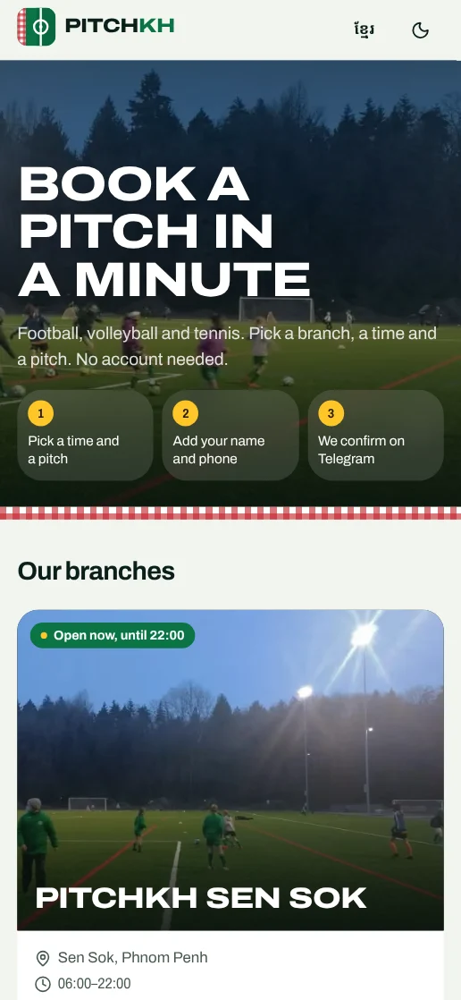
01HomeThree steps: time, name, Telegram confirm.
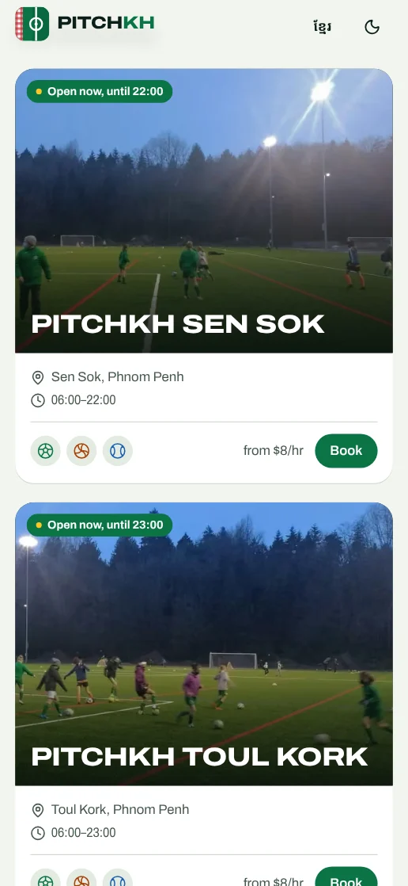
02Pick a branchOpen now, hours and price from.
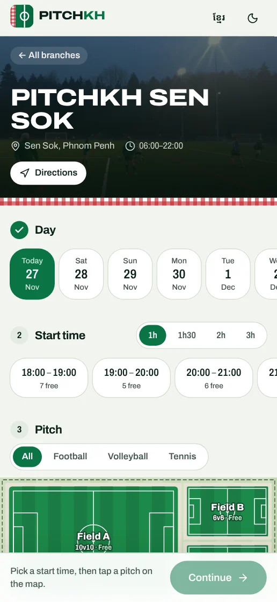
03Branch pageDirections, then step 1: the day.
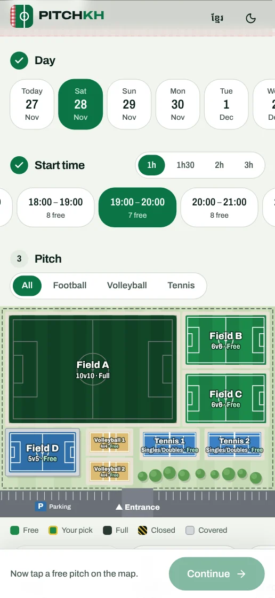
04Day and timeEach slot shows how many pitches are free.
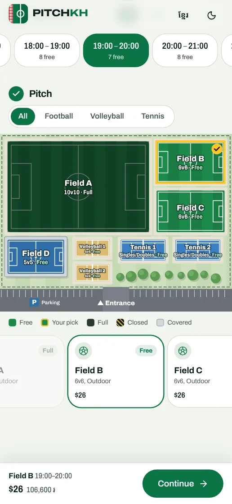
05Pitch on the mapTap a free pitch on the venue plan.
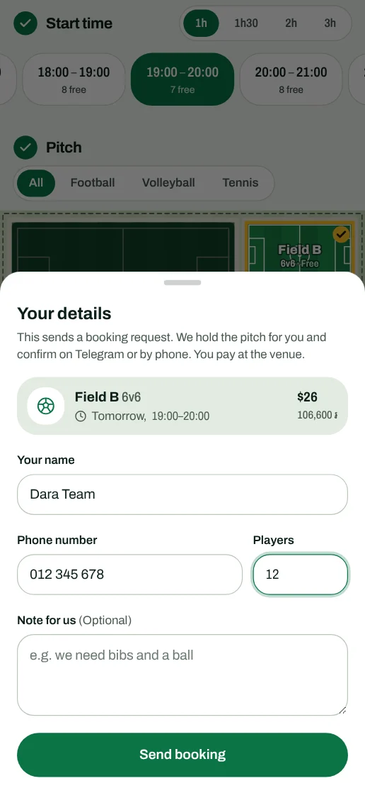
06Your detailsName, phone, players. That's all.
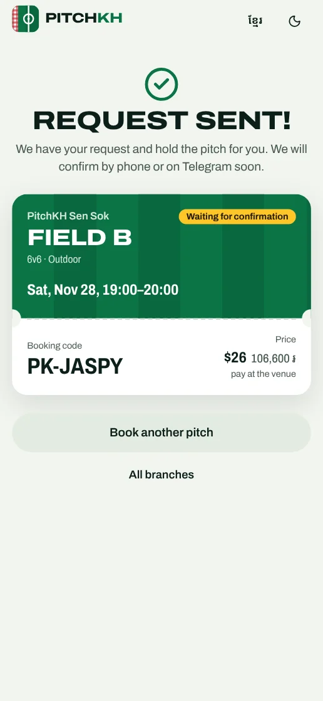
07Request sentPitch held, booking code, pay at the venue.
STAFF Confirm it from Telegram
PitchKH Sen Sok · Field B
🗓 Sat, Nov 28 · 19:00–20:00
👥 12 players · $26
📋 Open bookings opens the staff screen inside Telegram.
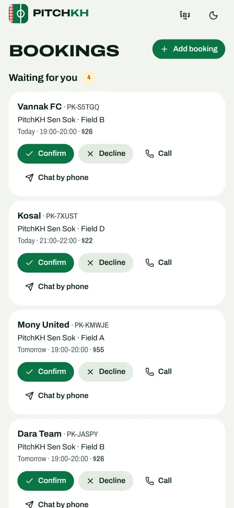
08Waiting for youConfirm, decline, call or chat in one tap.

09Day timelineEvery pitch per branch. Brown waits, green is confirmed.
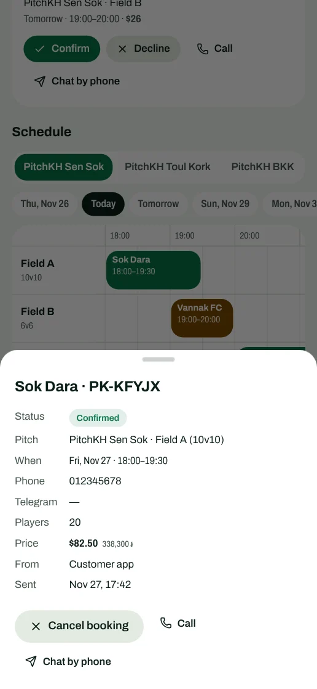
10Booking detailsWho, when, price, where it came from.
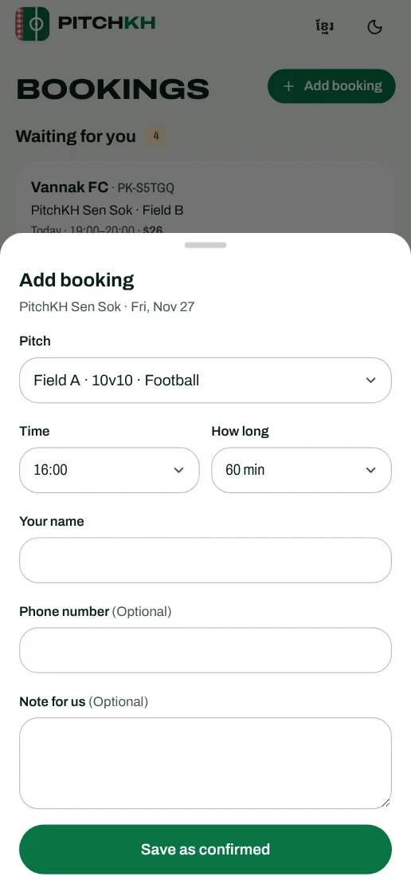
11Walk-insPhone or walk-in bookings, confirmed at once.
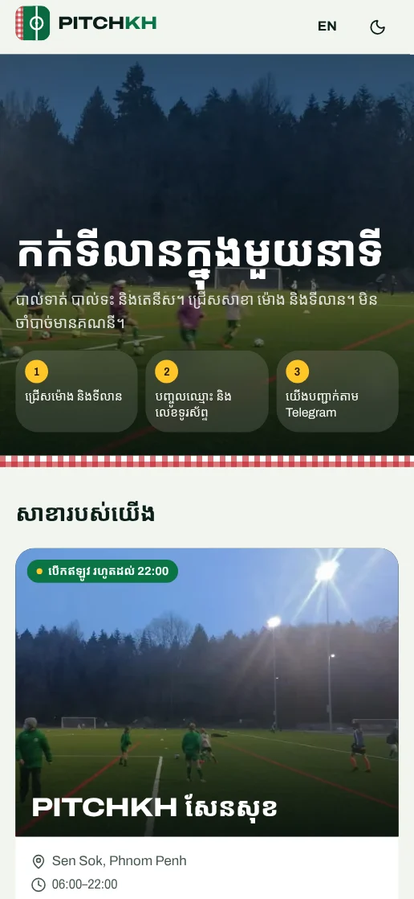
12In KhmerEvery screen in ខ្មែរ with one tap.
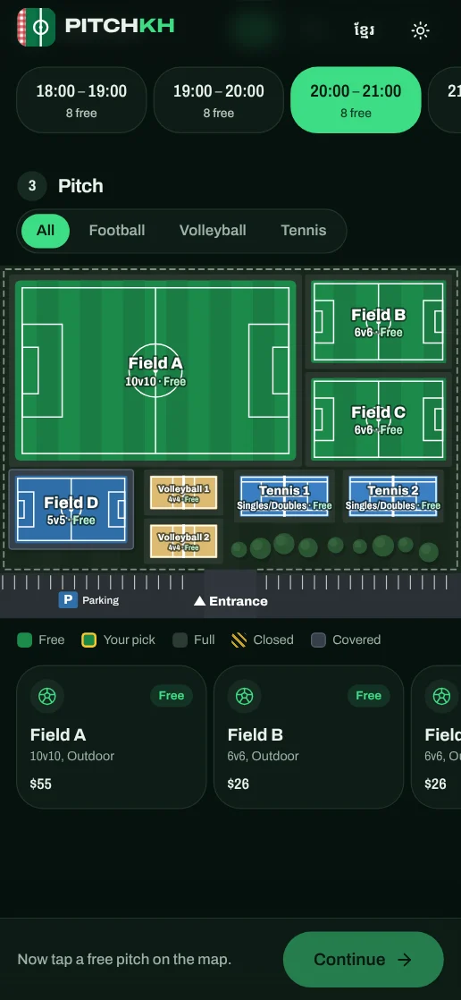
13Dark modeFor evening games.
The customer hears back on Telegram once staff confirm or cancel. All names and phone numbers are made-up demo data.